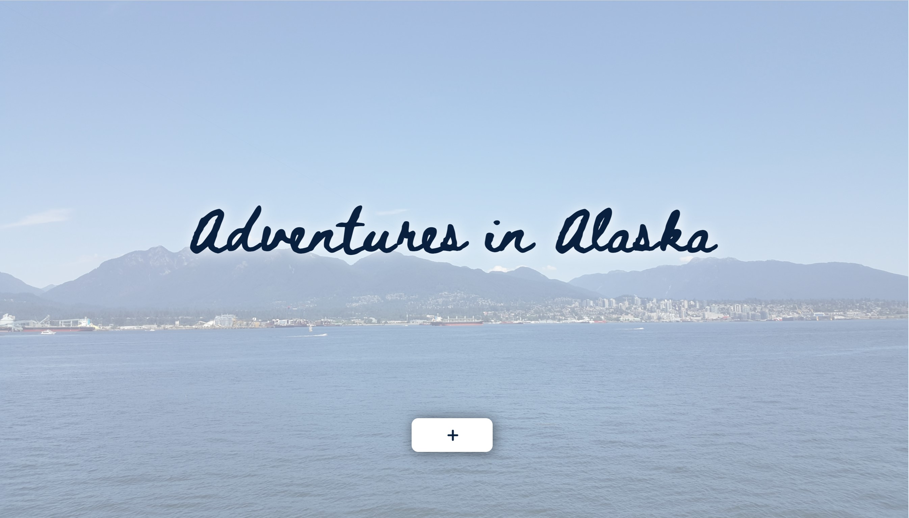
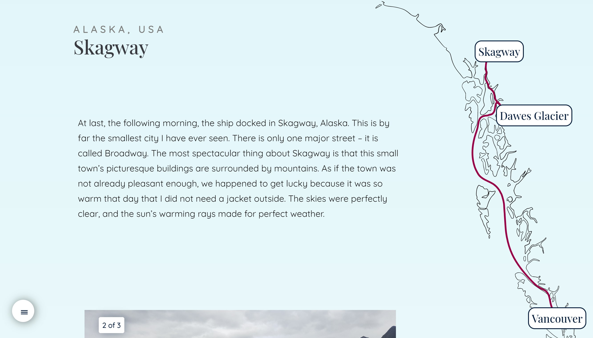

×

Adventures in Alaska
An Immersive Web Journey
Process

This website was created in Visual Studio Code using HTML, CSS, and JavaScript. It took four months of on-and-off development to complete. This was my first time ever using JavaScript for development, so I had to do a lot of research before beginning to code the website. Once I had understood enough of the basics, I began to collect images and text for the website. The site is a documentation of a trip I took, so I used my own pictures and wrote my own explanations. I then moved onto coding the website, adding animations and transitions wherever possible to make it more engaging. By far the biggest challenge was animating SVG graphics, but after that was achieved, the website reached completion at last.
Intentions
The intention of this website was to tell the story of a trip I had taken with my family several years ago. I wanted to take the viewer on a journey along with me. The website consists of six sections, though only one section is available when the site is first loaded. The viewer reads the section, then clicks a button to continue. As this button is clicked, the next section appears, and there is a travelling line on the map leading to the next destination. This mechanic hopefully makes the viewer feel as though they are on the trip with me. There is a dynamic navigation screen which evolves as the sections become visible, allowing the viewer to revisit certain sections if they wish.
